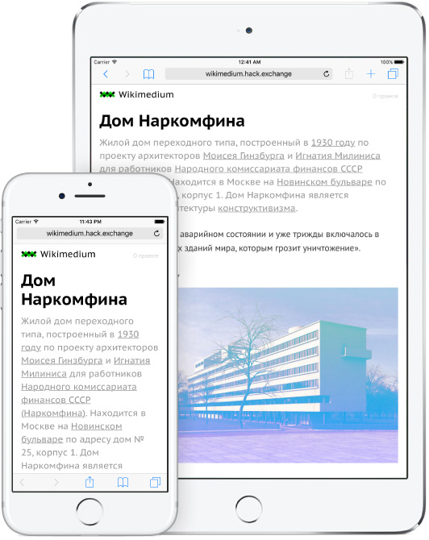
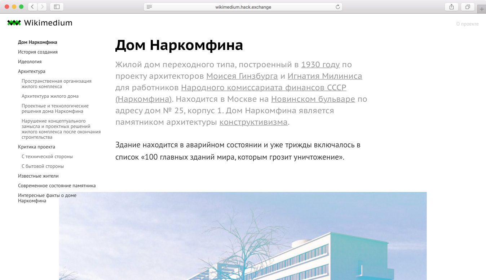

Наглядный пример,
чтобы учиться веб-вёрстке.
Проект, разработанный командой Hæd Exchange,
для обучения основам веб-вёрстки в рамках
образовательного проекта Hack Exchange.

С нуля до первого сайта
под компьютеры, смартфоны
и планшеты.
Чтобы начать изучать веб-вёрстку на этом проекте
не требуется каких-то специальных знаний, кроме
базового умения пользоваться компьютером.

Реальный проект, реальный
рабочий процесс.
Обучение приближено к работе в реальной
жизни. Работа разбита на этапы от типографики,
создания меню и использования эффектов,
до адаптации под мобильные устройства
и использования скриптов.
Возможность самостоятельного
и курируемого обучения.
Вы можете обучаться самостоятельно по исходному коду проекта,
выложенному на GitHub, или записаться на курс “Основы
веб-вёрстки с Захаром Днём” на Hack Exchange.